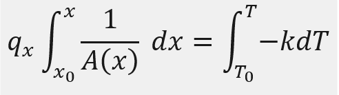
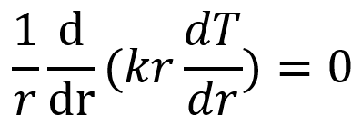
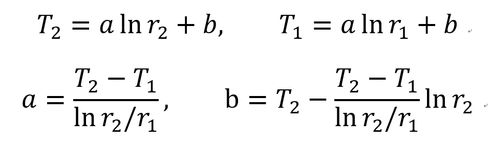
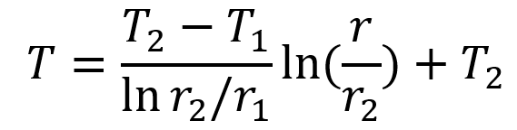
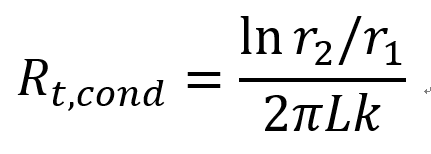
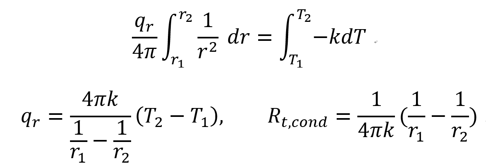

Previous Poster
Steady, 1-D, No E generation case,
Temperature Eq은 다음 과 같다.
![[Heat and Mass transfer] Ch 3 ,1-Dimensional, Steady-State Conduction - Area change](./images/img-001.png)
지난시간, 위식을 적분하여
Temperature distribution을 해석하였다.
결론적으로,
qx(괄호안)이 x와 independent
하였다.
However, 만약에
Area change
하는 상황에서
우리는 다르게 접근 해야만 한다.
Fourier's Law 로부터 접근해보자.
![[Heat and Mass transfer] Ch 3 ,1-Dimensional, Steady-State Conduction - Area change](./images/img-002.png)
위식을 적분해주면 (qx는 일정하므로 밖으로)

결국,
면적을 x에 따른 식으로 표현 할 수 있다면,
T(x)를 x로 표현 할 수 있다.
(우리의 목표 = Temperature 분포를 아는것)
지금까지 xdirection 1-D Steady process를 분석했지만,
이제 Cylindrical coordinate에서 분석해보자.
![[Heat and Mass transfer] Ch 3 ,1-Dimensional, Steady-State Conduction - Area change](./images/img-004.png)

Temperature Eq을 통해서
r dT/dr 은 r과 independent
하다는 것을 알 수 있고,
Heat transfer rate는 Fourier's Law로 다음과 같다.
![[Heat and Mass transfer] Ch 3 ,1-Dimensional, Steady-State Conduction - Area change](./images/img-006.png)
rdT/dr 은 r과 independent하므로
결국 qr 은 r과 무관하게 일정하다.
이제 T(r)을 r에 관한 함수로 표현해보자.
![[Heat and Mass transfer] Ch 3 ,1-Dimensional, Steady-State Conduction - Area change](./images/img-007.png)
(a,a',b,b'은 모두 상수)
이제 boundary condition을 대입하여, a,b를 표현해보자.

따라서, 최종적으로

이제 Heat transfer rate qr을 구해보면
![[Heat and Mass transfer] Ch 3 ,1-Dimensional, Steady-State Conduction - Area change](./images/img-010.png)
위식을 살펴보면 r이 없는 것을 알 수 있다(independent)
자, T, q를 구했으니 다음은 뭘구해야될까?
바로
Thermal Resistance

따라서, 아주 복잡하고 여려 곂이 있는 cylinder conduction도
다음과 같이 표현 할 수 있다.
[p127]
마지막으로 sphere 형태일때는??
![[Heat and Mass transfer] Ch 3 ,1-Dimensional, Steady-State Conduction - Area change](./images/img-012.png)
qr = qr+dr임을 알 수 있다.
Fourier's Law에 의해,
![[Heat and Mass transfer] Ch 3 ,1-Dimensional, Steady-State Conduction - Area change](./images/img-013.png)
이제 이 식을 적분 해주면,
다음과 같이, qr, Thermal resistance derive 가능이다.
